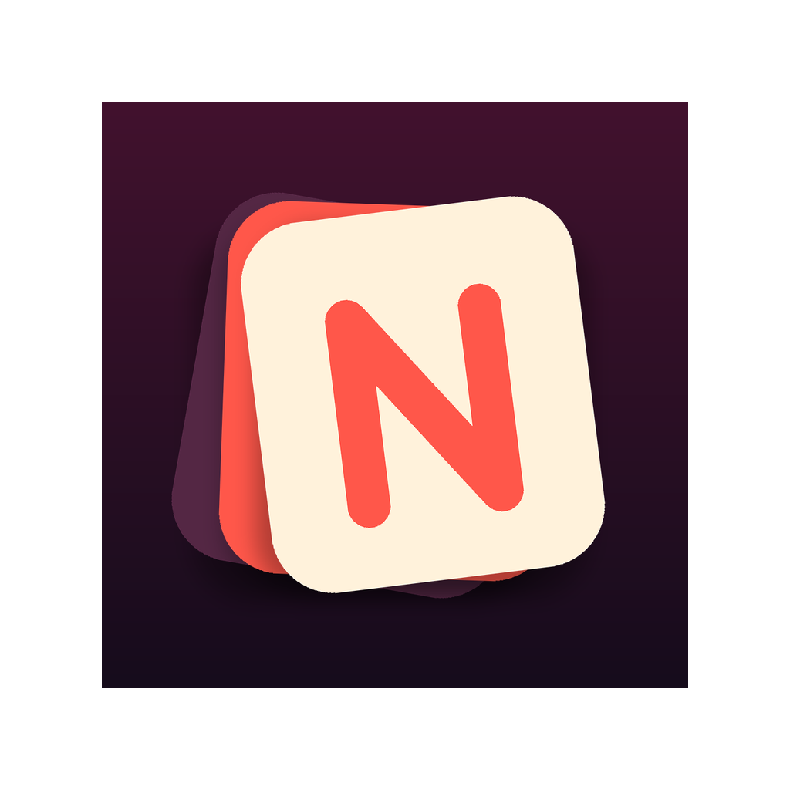

A calmer reservation tool
Restaurant reservation discovery for iPhone
Nab a great reservation without the hunt.
Nab helps you find tables that are actually available, then browse them in a way that feels calmer than the usual search loop. Swipe through real options, save the ones worth coming back to, and finish booking through OpenTable.
Built for people who already know the restaurant world and just want a better, faster way into a good table.
Availability first
Swipe, don’t dig
Book through OpenTable
What makes it feel different
Fewer dead ends. Better tables. Less nonsense.
Nab is meant to feel like a smart shortcut into a restaurant night you actually want, not another filter-heavy reservation chore.
The pitch
A better way to find a table you would actually say yes to.
Not a gimmick, not a members club, and not a bargain-hacker tool. Just a more useful, more tasteful way to discover a reservation.
How it works
Three steps. Much less search fatigue.
Pick the plan
Set your date, time, party size, and neighborhood up front.
Swipe verified tables
Browse options one at a time instead of wading through endless search results and dead ends.
Save and book
Keep the ones worth coming back to, then continue into the live OpenTable flow when you are ready.
Why Nab feels different
Built around availability, not endless hunting.
Most reservation apps assume you want to search harder. Nab assumes you would rather decide faster.
Search-first apps
- Start with long lists
- Ask you to grind through filters
- Lead to dead ends and tab overload
Nab
- Starts with tables that are actually available
- Presents options one at a time
- Makes it easier to spot something good quickly
Useful first
The product is meant to feel calm and credible before it feels clever.
Restaurant-first
Nab is rooted in the experience of getting into a good restaurant night, not generic nightlife branding.
Warm, not showy
It should feel like a smart friend with taste, not a velvet-rope club or a loud startup site.
Preview
The current Nab direction.
Real product screenshots will replace these launch placeholders, but this is the visual system the app and website are moving toward now.

FAQ
The obvious questions, answered quickly.
What is Nab?
Nab is an iPhone app that helps you discover restaurant reservations with a swipe-based experience instead of the usual search-first workflow.
Are the reservations actually available?
Nab is built around showing tables that are available for the plan you picked, so the experience starts from live availability rather than generic restaurant browsing.
How do bookings work?
Nab helps you find and save a table, then continues into the live OpenTable booking flow to complete the reservation.
Do I need OpenTable?
Bookings finish through OpenTable, so that remains part of the reservation flow.
Where is Nab available?
Nab is currently built for iPhone.